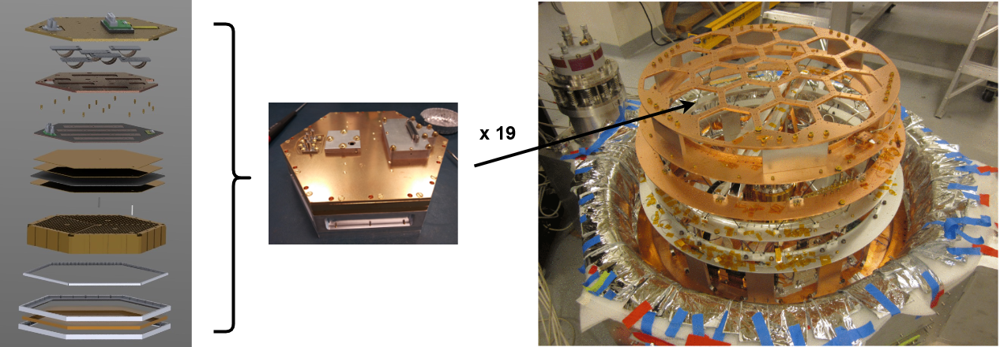

AliCPT
AliCPT is another ground-based cosmic microwave background telescope that will begin observations in the mid 2020s. It will be the first modern CMB polarimeter able to observe the northern sky, forming an important complement to the past few decades' measurements which primarily fall below the galactic plane. AliCPT is optimized for degree angular scale measurements, and will search for signatures of cosmic inflation. The project is a collaboration of around 100 scientists from institutions on 3 continents.

Photo: Yong-Ping Li
The AliCPT telescope will observe from an elevation of over 17,000 feet from the Tibetan Plateau. It consists of a single tube of refracting optical elements which focuses incoming radiation onto an array of 32,000 transition-edge sensor bolometers operating at a temperature of 0.3 Kelvin. These sensors are modularly encapsulated together with custom microwave SQUID multiplexed readout, and 19 of these modules will eventually tile the focal plane of the telescope as shown below.

Rightmost photo Salatino et al. (2023)
My contributions to this observatory have focused on the cryogenic detectors which transduce the observed microwave radiation into electrical signals and their associated readout electronics. At NIST, my colleagues and I designed, fabricated, and tested the first detector modules. I also led the development of more capable cryogenic multiplexers - doubling the previous channel handling capacity - which are required to satisfy cryogenic constraints of the telescope design.